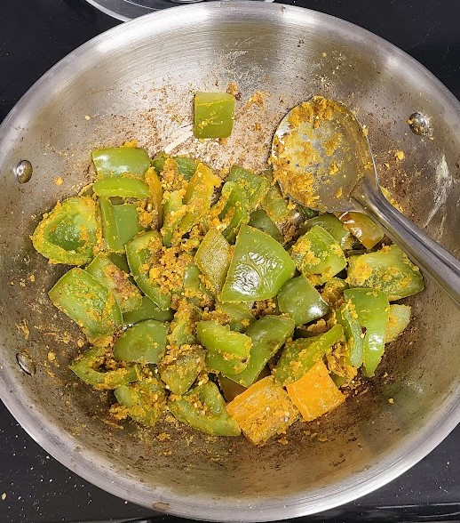

Pepper Saak

Mother's Recipe
Ingredients
- 1 1/2 tbsp of oil
- 2 1/2 cup of cut Pepper
- 1/4 and 1 spoon of besan
- 1 tsp sesame seeds
- 1/2 tsp Chili powder
- 1 1/2 tsp sugar
- 1/2 tsp salt
- 1/4 tsp garam masala
- 1/4 tsp turmeric
- 1 tsp coriander cumin powder
- Pinch of hing
Directions
- Roast besan in the microwave for 30 seconds and then put all ingredients in besan.
- Put oil in pan, let it warm and than put peppers in it and cook it until Peppers soft. Than put besan in it and mix it.
- Cook it for 5 minutes.